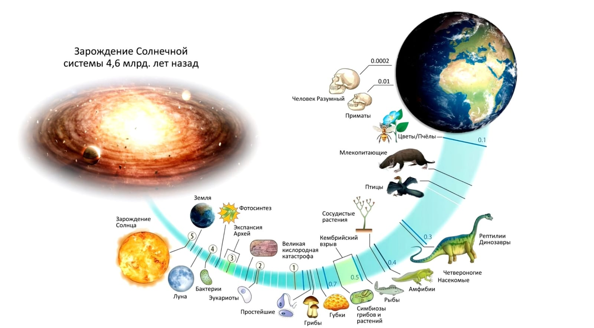
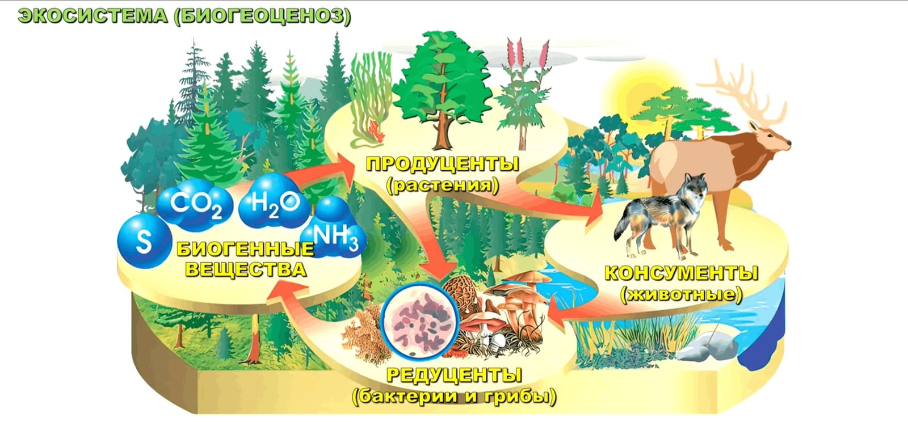

№ 04Общество
Общая Теория Управления через призму биологии и социологии

Наша планета не сразу стала зеленой, в начале она была экотопом: когда-то бактерии, грибки и растения появились на Земле и начали перерабатывать атмосферу и грунт, они стали создавать пригодную для дыхания атмосферу, почву, и на основе этих условий стали возникать все более крупные организмы. Тем самым экотоп спустя миллионы лет превратился в биотоп. Представьте, что у нас свежая кирпичная кладка: на ней нет никакой жизни, она только что положена, но если мы ее забросим, то постепенно на ней будут образовываться мох, какие-то насекомые, в общем, она обрастет жизнью. Еще пример: представим, что мы вскипятили воду, она является абсолютным экотопом. Оставим воду на пару месяцев, посмотрим туда и увидим, что она зацвела, там появились водоросли, бактерии и различные грибки. Либо мы можем взять астероид из космоса, поместить его на Землю, и, спустя некоторое время, этот астероид превратится в обычный камень, который также обрастет жизнью.
Существуют экотопы, в которых живые организмы заселиться не могут, — это высокие температуры, космический вакуум, вредные химические соединения, радиация, ультрафиолетовые лучи и др.

Когда-то 4,6 млрд лет назад зародилась солнечная система (см. выше). Было газопылевое облако, которое зажглось и появилось наше солнце, слепились планеты, и одной из них стала Земля, и она расположилась таким образом, что была не столь далеко от солнца и не так близка к нему. Такое ощущение, будто кто-то специально позаботился о том, чтобы планета Земля находилась на нужном расстоянии от солнца, чтобы вода была жидкой формы и чтобы на ней зародилась жизнь. С позиции теории управления здесь видны явные признаки присутствия субъекта управления. Создатель сформировал Землю, стабилизировал ее луной для равномерного вращения. Следствие: созданный субъектом экотоп стал превращаться в биотоп.

Биогеоценоз (см. выше) — единство живой и неживой материи, связанное обменом веществ и энергии, образуя устойчивую целостность. Биогенные вещества (из них строятся клетки живых организмов) потребляют продуценты (растения), которых потребляют консументы обоих типов (животные), а, спустя время, и консументы, и продуценты перерабатываются в редуценты (бактерии и грибы), которые расщепляют клетки на исходные биогенные вещества. Круг замыкается. Биогеоценоз (см. ниже) состоит из экотопа («чистой» среды обитания) и биоценоза (группы живых организмов, населяющих относительно однородные жизненные пространства). Биогеоценоз делится на 2 типа: естественный (созданный природой) и искусственный (агроценозы).
Рассмотрим масштаб экосистем. Например, если не помыть посуду, там заведется жизнь, если мы заглянем в лужу, найдем там свою экосистему. Аналогично с коралловым рифом, континентами и даже в масштабе звездных систем: Млечный путь также является экосистемой. Это великое открытие сделал Иван Антонович Ефремов. Он назвал эту экосистему Великим кольцом и впервые ввел это понятие в своем романе «Туманность Андромеды». В художественной форме он сумел донести, что мы никогда не были и не будем одинокими во Вселенной, каждая биосфера в своем развитии рано или поздно рождает разумный биологический вид. Осваивая разум, он начинает брать ответственность за заботу и дальнейшее развитие своей матери, биосферы, и ее живых организмов, братьев своих меньших. Эта же ответственность подталкивает этот разумный биологический вид на поиск и налаживание контакта с другими обладателями разума в этой Вселенной. Когда разумный биологический вид духовно-нравственно созревает, тогда он получает приглашение в галактическую семью — Великое Кольцо.
Человек, благодаря способности изменять свое поведение, постепенно стал изменять свой образ жизни и делать его отличным от жизни других биологических видов. Он изменял свое поведение, отношение к различным факторам и начал создавать некую искусственную среду, в которой он чувствовал себя более безопасно, чтобы защититься от голода, засухи, темноты, диких зверей, сырости и тд. Так, из создания различных социальных институтов, которые в свою очередь вышли из институтов семьи и племени, появилась техносфера.
К техносфере относятся города, сильные укрупнения людей на маленькой площади. Спустя время оказалось, что человеческая техносфера вредит биогеоценозу, в том числе и самому человеку, который все это создал. Иронично, что среди людей постоянно находились группы, которые овладевали навыками управления и, пользуясь невежеством непонимающих, пичкали и пичкают до сих пор то генное оружие, то короткие вертикальные видео, то безБожные идеи по типу "чайлдфри". Так вот, возвращаемся к вреду для биогеоценоза: общее невежество людей привело к массовым катастрофам, таким, как загрязнение окружающей среды, пожары. Из-за этого страдает вся экосистема, что противоречит задаче человечества: сохранять и развивать.
Неизбежно настанет время, когда мегаполисы начнут разбирать, а на замену слова «урбанизация» придет «деурбанизация». Человечество должно войти в Великое Кольцо, но для этого мы должны начать жить по-Божьи.
Начать жить по-Божьи мы можем только одним путем: увеличивать объем здравомыслия в обществе. А человеческое здравомыслие проявляется на основе поддержания Любви. В слове семья есть «Семь и Я», а, как всем известно, русский язык не имеет недоразумений. Это значит, что все члены семьи должны стремиться к здравомыслию и уровню любви, какое есть у новорожденных младенцев, они все всегда рождаются переполненные любовью, пока человеческая система не начинает их ломать. Так вот, цель человека: донести до конца жизненного цикла здравомыслие и любовь, которая была с ним в его начале. Здравомыслящие семьи должны помогать нездравомыслящим, невежественным. Только так мы перекроим ход человеческой истории, тянущийся за нами миллионы лет.
Настоящее управление начинается с себя. Каждый человек создан быть управленцем, но не каждый понимает это. Если ты не можешь заставить себя пойти и научиться чему-то, то какой же из тебя управленец? А значит, ты недостойный человек. Начинай меняться и менять мир.